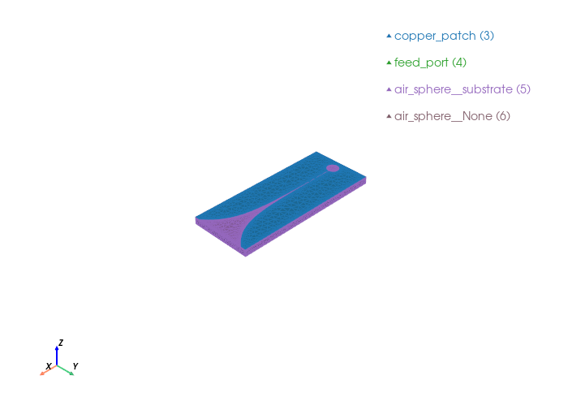

Vivaldi antenna#
Full parametric Vivaldi antenna mesh using gmsh/OpenCASCADE.
The exponential taper profile follows: $\(y = \pm\frac{w_s}{2} \cdot e^{C(x - x_0)}\)\( where \)C\( is the opening rate (25 here) and \)x_0$ is the taper start.
Coordinate convention (matches the diagram, x is the long axis):
Ground plane centred at origin in XY plane
Aperture opens toward +x
Cavity is on the −x side
Z is vertical (substrate thickness)
import gmsh
import math
import numpy as np
from palacetoolkit.mesh import (
Entity,
run_entity_pipeline,
generate_3d_mesh,
create_graded_mesh
)
from palacetoolkit.viz import run_with_scrollable_output, view_mesh
Antenna parameters#
taper_length: float = 0.243
aperture_width: float = 0.105
opening_rate: float = 25.0
slot_width: float = 5e-4
cavity_diameter: float = 0.024
cavity_to_taper: float = 0.023
ground_plane_length: float = 0.300
ground_plane_width: float = 0.125
h_sub: float = 0.015
air_height: float = 0.05
air_margin: float = 0.05
freq_ghz = 4.5
c0 = 3e8
wavelength = c0 / (freq_ghz * 1e9)
mesh_file = "vivaldi.msh"
# Derived coordinates
Lx = ground_plane_length
Ly = ground_plane_width
# Left edge of the ground plane.
x0 = -Lx/2
# Right edge of the ground plane.
x1 = Lx/2
# x_taper_start: where the exponential section begins
x_taper_start = x1 - taper_length
# x_slot_left: start of parallel section = end of cavity = x_taper_start - s
x_slot_left = x_taper_start - cavity_to_taper
# cavity centre
x_cav = x_slot_left - cavity_diameter / 2
print(f"Ground plane: [{x0:.4f}, {x1:.4f}]")
print(f"Taper starts at: x = {x_taper_start:.4f}")
print(f"Parallel section: x = [{x_slot_left:.4f}, {x_taper_start:.4f}] "
f"length = {cavity_to_taper*1e3:.1f} mm (= cavity_to_taper)")
print(f"Cavity centre at: x = {x_cav:.4f}")
print(f"Cavity right edge: x = {x_slot_left:.4f} (= x_taper_start - s)")
Ground plane: [-0.1500, 0.1500]
Taper starts at: x = -0.0930
Parallel section: x = [-0.1160, -0.0930] length = 23.0 mm (= cavity_to_taper)
Cavity centre at: x = -0.1280
Cavity right edge: x = -0.1160 (= x_taper_start - s)
Exponential taper mathematics#
The upper edge of the Vivaldi slot follows: $\(y_{\text{upper}}(x) = \frac{w_s}{2} \cdot e^{C(x - x_{\text{ts}})}\)\( scaled so that \)y_{\text{upper}}(x_1) = w_a/2$.
We solve for the normalisation constant \(A\): $\(A = \frac{w_a/2}{e^{C(x_1 - x_{\text{ts}})}}\)\( which gives: \)\(y_{\text{upper}}(x) = A \cdot e^{C(x - x_{\text{ts}})}\)$
The lower edge is the mirror: \(y_{\text{lower}} = -y_{\text{upper}}\).
def taper_y(x: float, sign: float = 1.0) -> float:
# Normalisation: amplitude A chosen so y(x1) = aperture_width/2
A = (aperture_width / 2) / math.exp(opening_rate * (x1 - x_taper_start))
return sign * A * math.exp(opening_rate * (x - x_taper_start))
# Quick sanity checks
print(f"y at taper start : {taper_y(x_taper_start):+.5f} (expected ≈ {slot_width/2:+.5f})")
print(f"y at aperture : {taper_y(x1):+.5f} (expected ≈ {aperture_width/2:+.5f})")
y at taper start : +0.00012 (expected ≈ +0.00025)
y at aperture : +0.05250 (expected ≈ +0.05250)
Initialise gmsh#
gmsh.initialize()
gmsh.model.add("vivaldi_antenna")
kernel = gmsh.model.occ
Build the 3-D volumes (substrate + air sphere)#
# Bounding box extents
total_xmin = x0 - air_margin
total_xmax = x1 + air_margin
total_ymin = -Ly/2 - air_margin
total_ymax = Ly/2 + air_margin
total_zmax = h_sub + air_height
# Substrate
substrate = kernel.addBox(
x0, -Ly/2, 0,
Lx, Ly, h_sub
)
# Air sphere (replace air box, consistent with patch_antenna workflow)
airsphere_radius = max(abs(total_xmin), abs(total_xmax), abs(total_ymin), abs(total_ymax), total_zmax)
air_sphere = kernel.addSphere(0.0, 0.0, 0.0, airsphere_radius)
print("Substrate tag:", substrate)
print("Air sphere tag:", air_sphere)
Substrate tag: 1
Air sphere tag: 2
Build the copper patch (ground plane + taper slot + cavity)#
Strategy:
Start with a full rectangular ground-plane surface.
Subtract the exponential slot (built from a spline boundary).
Subtract the circular cavity.
The result is the physical copper surface at z = h_sub.
# Top rectangle. We´ll cut the slot and cavity out of this.
top_rect = kernel.addRectangle(x0, -Ly/2, h_sub, Lx, Ly)
# Parallel section geometry.
p_ul = kernel.addPoint(x_slot_left, +slot_width/2, h_sub)
p_ur = kernel.addPoint(x_taper_start, +slot_width/2, h_sub)
p_lr = kernel.addPoint(x_taper_start, -slot_width/2, h_sub)
p_ll = kernel.addPoint(x_slot_left, -slot_width/2, h_sub)
# Straight lines
line_top_par = kernel.addLine(p_ul, p_ur) # upper parallel edge
line_bot_par = kernel.addLine(p_lr, p_ll) # lower parallel edge (reversed for CCW)
line_left = kernel.addLine(p_ll, p_ul) # left closing line (at x_slot_left)
# Interpolate points along the exponential taper curve from x_taper_start to x1.
N_pts = 100
xs = np.linspace(x_taper_start, x1, N_pts)
# Upper spline
upper_inner = [kernel.addPoint(float(x), taper_y(float(x), +1.0), h_sub)
for x in xs[1:]]
upper_spline = kernel.addSpline([p_ur] + upper_inner)
# Lower spline: starts at p_lr, reversed direction for CCW loop.
lower_inner = [kernel.addPoint(float(x), taper_y(float(x), -1.0), h_sub)
for x in xs[1:]]
# In the loop we traverse lower in reverse (aperture → taper_start),
# so we list points aperture-end first.
lower_spline = kernel.addSpline(lower_inner[::-1] + [p_lr])
# Aperture closing line (right edge, x = x1)
p_apt = upper_inner[-1] # top-right aperture point
p_apb = lower_inner[-1] # bottom-right aperture point
line_aperture = kernel.addLine(p_apt, p_apb)
slot_loop = kernel.addCurveLoop([
line_left, # up the left edge (x_slot_left, bot→top)
line_top_par, # rightward along upper parallel
upper_spline, # upper exponential curve to aperture
line_aperture, # down the aperture edge
lower_spline, # lower exponential back to x_taper_start (reversed)
line_bot_par, # leftward along lower parallel back to start
])
slot_surf = kernel.addPlaneSurface([slot_loop])
# Circular cavity
cav_r = cavity_diameter / 2
cav_cx = x_cav
cav_cy = 0.0
cav_circle = kernel.addCircle(cav_cx, cav_cy, h_sub, cav_r)
cav_loop = kernel.addCurveLoop([cav_circle])
cav_surf = kernel.addPlaneSurface([cav_loop])
print(f"Parallel section: x=[{x_slot_left:.4f}, {x_taper_start:.4f}] y=±{slot_width/2:.5f}")
print(f"Exponential section: x=[{x_taper_start:.4f}, {x1:.4f}]")
print(f"Aperture width at x1: {2*taper_y(x1,1)*1e3:.2f} mm (target {aperture_width*1e3:.2f} mm)")
print("Top rectangle tag: ", top_rect)
print("Slot surface tag: ", slot_surf)
print("Cavity surface tag: ", cav_surf)
Parallel section: x=[-0.1160, -0.0930] y=±0.00025
Exponential section: x=[-0.0930, 0.1500]
Aperture width at x1: 105.00 mm (target 105.00 mm)
Top rectangle tag: 8
Slot surface tag: 9
Cavity surface tag: 10
Feed port#
From the inset diagram, the feed port is a square face in the YZ plane
at the left edge of the ground plane (x = x0). It is centred on the slot
(y = 0) and spans the substrate thickness in z.
feed_offsetis the x-axis offset that positions where along the slot the port is referenced — here it locates the port atx = x0 + feed_offsetinside the ground plane, but the excitation face itself sits flush atx = x0(the left wall of the computational domain).The port is square: width = height =
slot_widthin the YZ cross-section.It is centred at
y = 0, z = h_sub / 2(mid-height of the substrate).
port_size = slot_width # square side length [m]
port_x_ctr = x_taper_start - port_size / 2 # port centre along x
port_x0 = port_x_ctr - port_size / 2 # left x of port
port_y0 = -port_size / 2 # bottom y (centred on slot)
# Flat XY-plane rectangle at z = h_sub — no rotation needed.
feed_port_surf = kernel.addRectangle(
port_x0, # x start
port_y0, # y start (centred: -w_s/2 .. +w_s/2)
h_sub, # z = top of substrate
port_size, # dx = slot_width (square in x)
port_size, # dy = slot_width (square in y, touches both copper edges)
)
print(f"Feed port surface tag: {feed_port_surf}")
print(f"Port centre: x={port_x_ctr:.4f} y=0 z={h_sub:.5f} (top of substrate)")
print(f"Port x range: [{port_x0:.4f}, {port_x0+port_size:.4f}]")
print(f"Port y range: [{port_y0:.5f}, {-port_y0:.5f}]")
print(f"Port size: {port_size*1e3:.2f} mm × {port_size*1e3:.2f} mm (square)")
print(f"Sanity: port_x_ctr ({port_x_ctr:.4f}) should be between "
f"cavity right edge ({x_cav + cavity_diameter/2:.4f}) "
f"and taper start ({x_taper_start:.4f})")
Feed port surface tag: 11
Port centre: x=-0.0932 y=0 z=0.01500 (top of substrate)
Port x range: [-0.0935, -0.0930]
Port y range: [-0.00025, 0.00025]
Port size: 0.50 mm × 0.50 mm (square)
Sanity: port_x_ctr (-0.0932) should be between cavity right edge (-0.1160) and taper start (-0.0930)
Boolean operations — assemble the copper patch#
Cut the slot and cavity out of the ground-plane rectangle. The feed strip is kept separate (it is a distinct conductor patch).
kernel.synchronize()
# Cut slot + cavity from ground-plane rectangle
# BooleanCut returns (result_dimtags, map)
copper_patch, _ = kernel.cut(
[(2, top_rect)], # object: full rectangle
[(2, slot_surf), (2, cav_surf)], # tools: slot + cavity
removeObject=True, removeTool=True
)
kernel.synchronize()
print("Copper patch surfaces after boolean cut:")
for dim, tag in copper_patch:
print(f" dim={dim}, tag={tag}")
Info : [ 0%] Difference
Info : [ 10%] Difference
Info : [ 20%] Difference
Info : [ 30%] Difference
Info : [ 40%] Difference
Info : [ 50%] Difference
Info : [ 70%] Difference - Filling splits of edges
Info : [ 80%] Difference - Making faces
Info : [ 90%] Difference - Adding holes
Copper patch surfaces after boolean cut:
dim=2, tag=8
Entity definition.#
In order to get a good mesh we need to fragment it and restore it, run_entity_pipeline does this and also defines the physical groups.
entities = [
Entity("copper_patch", dim=2, btype="pec", mesh_order=1, tags=[copper_patch[0][1]]),
Entity("substrate", dim=3, btype="dielectric", mesh_order=1, tags=[substrate], loss_tan=0.0009, eps_r=2.2, mu_r=1.0),
Entity("air_sphere", dim=3, btype="dielectric", mesh_order=2, tags=[air_sphere], loss_tan=0.0, eps_r=1.0, mu_r=1.0),
Entity("feed_port", dim=2, btype="waveport", mesh_order=0, tags=[feed_port_surf]),
]
pg_map = run_entity_pipeline(entities)
create_graded_mesh( wavelength,
ppw_near=300,
ppw_far=5,
transition_distance=wavelength/4,
set_as_background=True)
generate_3d_mesh(entities, mesh_file, optimize=True)
gmsh.option.setNumber("Mesh.MshFileVersion", 2.2)
gmsh.write(mesh_file)
gmsh.finalize()
Physical group 'substrate' (dim=3): pg=1, tags=[1]
Physical group 'air_sphere' (dim=3): pg=2, tags=[2]
Physical group 'copper_patch' (dim=2): pg=3, tags=[8]
Physical group 'feed_port' (dim=2): pg=4, tags=[11]
Physical group 'air_sphere__substrate' (dim=2): pg=5, tags=[12, 13, 14, 15, 5, 16, 17, 18]
Physical group 'air_sphere__None' (dim=2): pg=6, tags=[19]
ignoring 3 curves from {'air_sphere__None'}
global: 25 curves, SizeMin=0.0002
ppw_near=300 ppw_far=5
SizeMax=0.0133 transition=0.0167
Mesh saved to vivaldi.msh
Nodes: 60154
Elements: 393336
Info : Writing 'vivaldi.msh'...
Info : Done writing 'vivaldi.msh'
Mesh generation#
view_mesh(mesh_file, transparent_groups="air_sphere__None", transparent_alpha=0)
Loading mesh file: vivaldi.msh
Groups to render transparent: air_sphere__None
Mesh loaded successfully with 2 cell blocks
Found 59308 triangles total
Physical group tags in mesh: {3: 'copper_patch', 4: 'feed_port', 5: 'air_sphere__substrate', 6: 'air_sphere__None'}
